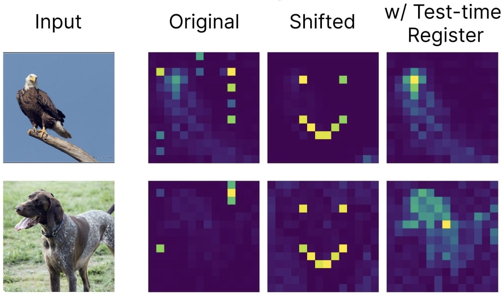
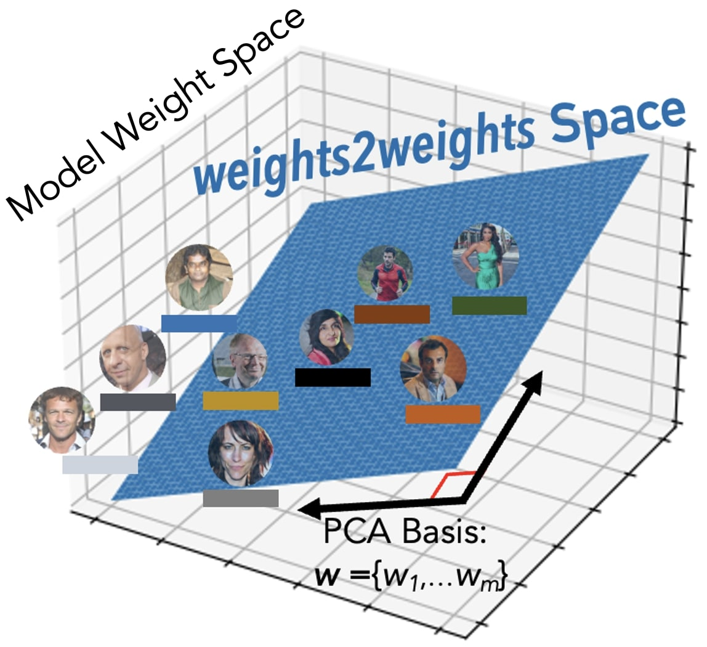
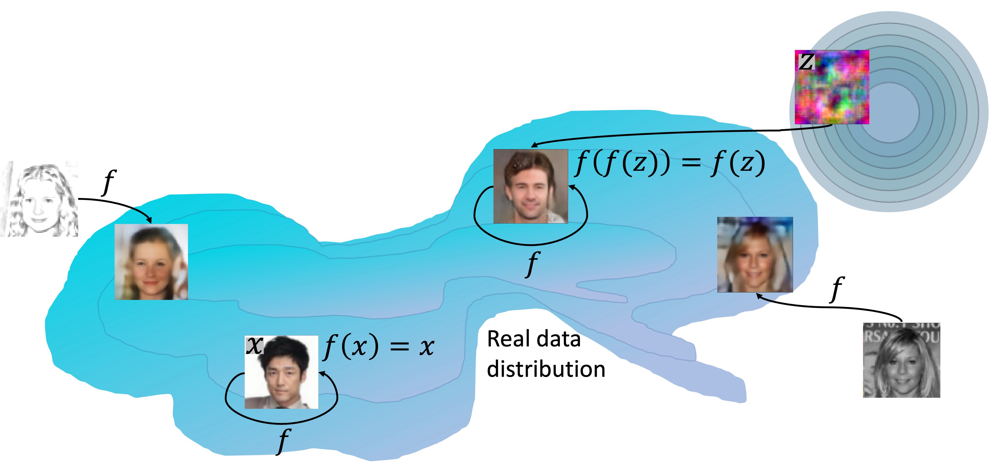
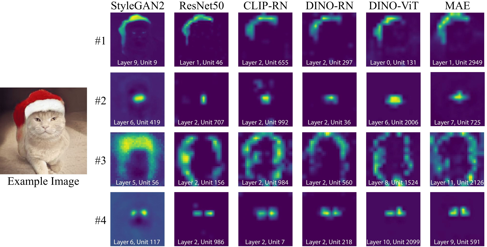

Vision Transformers Don't Need Trained Registers
NeurIPS 2025 (Spotlight, top 3%)
Hi! I am a PhD student at Berkeley AI Research, advised by Alexei A. Efros (2023-present). I am interested in enhancing our scientific understanding of deep learning. Lately, I have been thinking about learning dynamics, universality in representations, properties of weight space, and the role of data.
My goal is to leverage these insights to guide the design of better algorithms and models. My research is supported by the DOE Computational Science Graduate Fellowship.
Previously, I graduated from Northwestern in 2023 with a BS in Computer Science. During my undergrad, I had the pleasure of working with many wonderful mentors: Pietro Perona, Aggelos Katsaggelos, Jennifer J. Sun, Vibhav Vineet, and Neel Joshi.
Vision Transformers Don't Need Trained Registers accepted as a spotlight (top 3%) at NeurIPS 2025.
Talks at: New England Mechanistic Interpretability Workshop, Cohere Labs, Northeastern, MIT.
New preprint released: "Vision Transformers Don't Need Trained Registers"
Co-organized the Mechanistic Interpretability for Vision Workshop at CVPR.

NeurIPS 2025 (Spotlight, top 3%)

NeurIPS 2024

